x = 0Into the weeds
Python fundamentals
Statements
A statement is a complete Python instruction
Two kinds of statements
Simple
Compound
Simple statements are individual instructions
continuereturn Trueprint("Hello")Compound statements contain other statements
for word in wordlist:
print(word)
first_letter = word[0]if score >= 5:
print("You win!")
else:
print("Better luck next time.")Anatomy of a compound statement
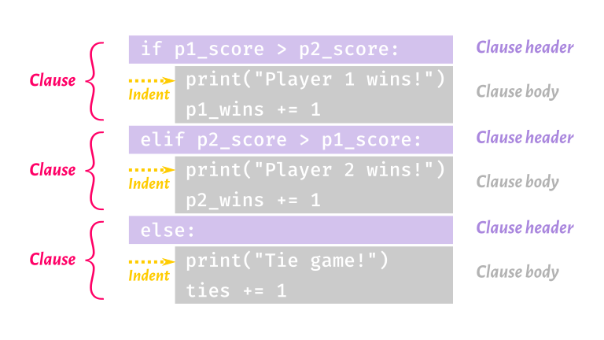
Summary
A statement is a complete Python instruction
Simple vs. compound statements
Elements of a compound statement
Clause
Header
Body
The body of a compound statement is always indented relative to the header
Expressions
An expression is a chunk of code that evaluates to a value
Expressions appear in many Python statements
Anywhere Python calls for a value, you can provide an expression
Any expression that is a complete line of code is also a statement
Common types of expressions
Literal value (
5,"hi",True)evaluates to the value
Variable
evaluates to the value of the variable
Function call (
abs(-4),round(10.6))evaluates to the result of the function call
Operators allow you to make more complex expressions
+addition-subtraction*multiplication/floating-point division//floor division%modulo operation**exponentiation
==equality!=inequality>greater than<less than>=greater than or equal<=less than or equal
notlogical negationandlogical conjunctionorlogical disjunctioninmembershipisidentity
Division operators
/performs "regular" (floating-point) division5 / 4evaluates to1.25Floating-point math can be imprecise
//performs floor division (rounds down to the nearest integer)5 // 4evaluates to1-5 // 4evaluates to-2
%gives you the remainder after division5 % 4evaluates to1-5 % 4evaluates to3Can be used to test parity (even/odd):
x % 2is0ifxis even,1otherwise
Parentheses
Parentheses are used for grouping, like in algebra
You can put parentheses around any expression
A parenthesized expression can contain line breaks
( 3 * x**3 + 4 * x**2 - 2 * x + 1)
Summary
An expression is a chunk of code that evaluates to a value
Simple expressions include literal values, variables, and function calls
You can use operators to make more complex expressions
Mind the differences between division operators (
/,//,%)
Parentheses in expressions are used for grouping (as in algebra)
Variables
Variables in Python are labels attached to values
Multiple labels can be attached to the same value
Variable names can consist of letters, numbers, and underscores
Variable names can’t start with numbers
Can’t use keywords (
if,return,def, etc.) as variable namesShouldn’t use function names (
print,list,round, etc.) as variable namesBy convention, avoid capital letters in variable names
Variable assignment
variable = expression
name = "Gina"area = width * heightnearest_int = round(5.3)Variable assignment statements are not expressions
Augmented assignment
Common task:
| Python gives us a set of augmented assignment operators to simplify this process:
| ||||||||
Example: | Example: |
Summary
Variables in Python are labels attached to values
Variable assignment is usually done with
=Variables can be updated with augmented assignment operators (e.g.,
+=)
Conditional statements
ifclause is mandatory, comes firstifcondition:
Zero or more
elifclauseselifcondition:
Zero or one
elseclauseelse:
if temp <= 0:
water_state = "ice"
elif temp <= 100:
water_state = "water"
else:
water_state = "steam"At most one clause gets executed
Conditions in a conditional statement are expressions
elif vs. if
Compare:
if temp <= 0:
water_state = "ice"
elif temp <= 100:
water_state = "water"
else:
water_state = "steam"if temp <= 0:
water_state = "ice"
if temp <= 100:
water_state = "water"
else:
water_state = "steam"What if the value of temp is
120?
15?
-10?
Boolean contexts
Conditions are Boolean contexts: Python converts the result of these expressions to
TrueorFalseMost values are "truthy". The following are "falsy":
0and0.0Empty collections (e.g., empty string, empty list, empty dictionary)
None
Example: non-Boolean value in a Boolean context
answer = input("What is your favorite color? ")
if answer:
print("You entered:", answer)
else:
print("You didn't enter anything")Conditional expressions
expression1 if condition else expression2
status = "minor" if age < 18 else "adult"print("¡Hola!" if lang="es" else "Hello!")Note that expression2 can be another conditional expression:
water_state = ("ice" if temp <= 0 else
"water" if temp <= 100 else
"steam")Conditional statements vs. conditional expressions
Conditional statements execute code if certain conditions are met; | Conditional expressions evaluate to one of two values depending on a condition; |
| |
Summary
Conditional statements execute code conditionally
Conditional expressions evaluate to one of two values depending on a condition
Conditions are Boolean contexts
Loops
Loops let us repeat instructions. Two kinds:
forloops: number of iterations is known in advancewhileloops: number of iterations is not known in advance
for loops
for varname in iterable:
body
print("The first ten"
" triangular numbers:")
t = 0
for i in range(1, 11):
t += i
print(t)iterable is a sequence (such as a string or a list) or sequence-like object (such as a
rangeobject).varname is called the iteration variable. It is created and populated by the
forloop.There will be one iteration of the loop for every item in iterable.
while loops
while condition:
body
n = 1
while n < 1000:
n *= 3
print("The first power of 3 greater"
" than 1000 is", n)condition is an expression.
The loop iterates as long as condition evaluates to
True(or another truthy value).
Altering flow of control in a loop
continueends the current iteration of a loop. The loop moves on to the next iteration, if there is one; otherwise it terminates.breakcauses a loop to terminate. Control passes to the code after the loop.returnterminates both a loop and the function it is in. Control passes to the statement that called the function.
while True:
Ensures the body of a loop executes at least once
Loop should contain
breakorreturnso that it is not infinite
def get_selection():
""" Ask the user to select 'a' or 'b'. Return their selection. """
while True:
response = input("Choose 'a' or 'b': ")
if response in ['a', 'b']:
return response
# if we didn't return, the user made an invalid choice
print("Sorry, that's not one of the choices.")Example with continue and break
Imagine we need to extract some information from a file. Here are the rules we will follow to get the information we need:
Ignore lines that start with
#Stop reading the file if we encounter a line consisting of four hyphens
Make a list containing the text of other lines in the file
data = list()
f = open('somefile.txt')
for line in f:
line = line.strip()
if line[0] == "#":
continue
if line == "----":
break
data.append(line)
f.close()Summary
Loops let us repeat instructions
forloops iterate a definite number of timeswhileloops iterate until a condition is false/falsywhile Trueguarantees at least one iteration
The flow of control in a loop can be altered using
continuebreakreturn(only if the loop is in a function)
Functions
Reusable sequences of instructions packaged as a unit
Can take input values (arguments)
Can return a value
Some built-in functions you should know:
|
|
|
Calling functions
All function calls include the function name followed by parentheses
Many functions take arguments; these go inside the parentheses
Arguments can be expressions
Function calls are expressions; they evaluate to the return value of the function
Examples:
print() # function call with no argumentsx = abs(-10) # function call with one argumentn = round(14.723, 2) # function call with two argumentsTwo kinds of arguments
print("Hello", "world!", sep="::", end="\n--\n")"Hello"and"world!"are positional argumentssep="::"andend="\n--\n"are keyword argumentsKeyword arguments always have a keyword, an equal sign, and a value/expression
Positional arguments always precede keyword arguments
The order of positional arguments is important
The order of keyword arguments isn’t important
Defining functions
Breaking a program into small functions is a Really Good Idea
Functions help you break down a problem into discrete steps
Functions make a program easier to
Read
Test and debug
Reuse
Defining functions
def function(parameters):
""" docstring """
body
def dist(x1, y1, x2, y2):
""" Calculate the Euclidean distance
between coordinates (x1, y1) and
(x2, y2). """
return ((x1 - x2)**2 +
(y1 - y2)**2)**0.5function is the name of the function.
parameters (optional) are variables that get their values when the function is called.
A docstring (optional) describes what the function does and how to use it.
The body contains the instructions that constitute the function. It usually contains a
returnstatement.
Variable scope
Two kinds of variables (for now):
|
Local variables are a Really Good Thing |
Two kinds of parameters
Required parameters are just variable names. The function won’t work unless an argument is provided for each required parameter.
Optional parameters look like keyword arguments: parameter
=default_value. If the user omits an optional parameter, the function will still work and the parameter’s value will be the default value.Optional parameters always follow required parameters.
Avoid mutable values as default values.
def get_pace(dist, time, dist_unit="mile", time_unit="minute"):
""" Calculate a pace given a distance and time. """
print(time/dist, time_unit + "s per", dist_unit)Calling functions with optional parameters
def get_pace(dist, time, dist_unit="mile", time_unit="minute"):
""" Calculate a pace given a distance and time. """
print(time/dist, time_unit + "s per", dist_unit)get_pace(3, 54)18.0 minutes per mile
get_pace(6, 0.9, time_unit="hour")0.15 hours per mile
get_pace(16, 0.8, dist_unit="kilometer", time_unit="hour")0.05 hours per kilometer
get_pace(16, 0.8, time_unit="hour", dist_unit="kilometer")0.05 hours per kilometer
return vs. print()
|
|
|
|
|
|
Most functions should use | If it’s important to show the user the result of a function, call the function, then |
Can you make sense of this?
def f(n):
if not isinstance(n, int):
raise TypeError("n must be an integer")
if n < 2:
raise ValueError("n must be at least 2")
fs = []
for i in range(2, int(n**0.5)+1):
while n % i == 0:
fs.append(i)
n //= i
if n != 1:
fs.append(n)
return fsCan you make sense of this?
def factorize(n):
"""Find all prime factors of n.
Args:
n (int): number to factorize. Must be greater than 1.
Returns:
list of int: a list of all prime factors of n. The product of
these numbers will be equal to n. Factors will be ordered from
smallest to largest.
Raises:
TypeError: value of n is not an integer.
ValueError: n is less than 2.
"""
if not isinstance(n, int):
raise TypeError("n must be an integer")
if n < 2:
raise ValueError("n must be at least 2")
factors = []
for i in range(2, int(n**0.5)+1):
while n % i == 0:
factors.append(i)
n //= i
# if n is not 1, it is also a prime factor
if n != 1:
factors.append(n)
return factorsDocstrings
Purpose of function
Purpose of arguments and expected data types
Meaning and data type of return value
Exceptions the function might raise
Side effects the function might have
"""Find all prime factors of n.
Args:
n (int): number to factorize. Must
be greater than 1.
Returns:
list of int: a list of all prime
factors of n. The product of
these numbers will be equal to
n. Factors will be ordered from
smallest to largest.
Raises:
TypeError: value of n is not an
integer.
ValueError: n is less than 2.
"""Summary
Functions are reusable sequences of instructions packaged as a unit
Arguments are values passed to functions as input
Positional arguments
Keyword arguments
Parameters are variables defined in a function header whose values correspond to the arguments
Required parameters
Optional parameters
Variables have scope
Docstrings communicate how to use a function
Exceptions
When something goes wrong in a Python program, an exception is raised. Common exceptions include
IndexError: the specified index (e.g., of a list) is out of rangeKeyError: the specified key (in a dictionary) is undefinedNameError: the specified name (of a variable, function, etc.) is undefinedValueError: the specified value is incompatible with the requested operation or function (e.g.,int("hello"))ZeroDivisionError: the code tried to divide by zero
Stack traces
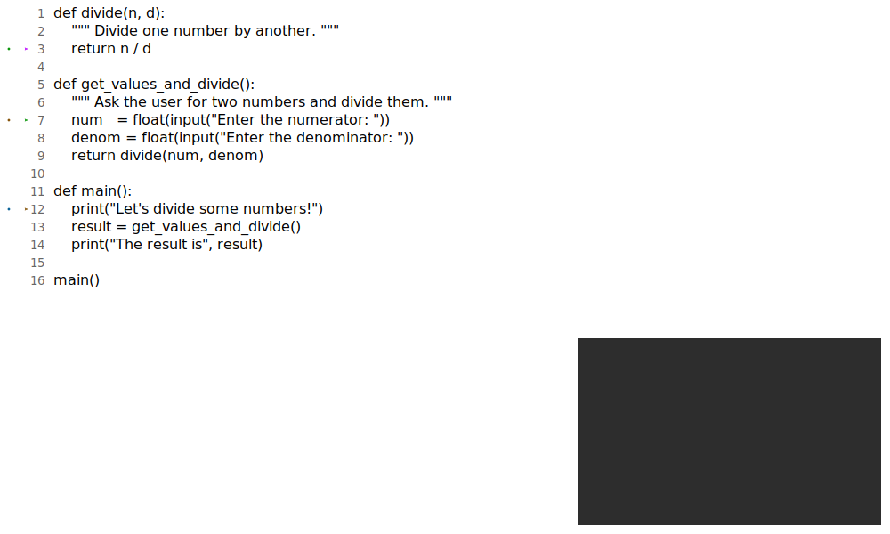
Stack traces
Stack traces
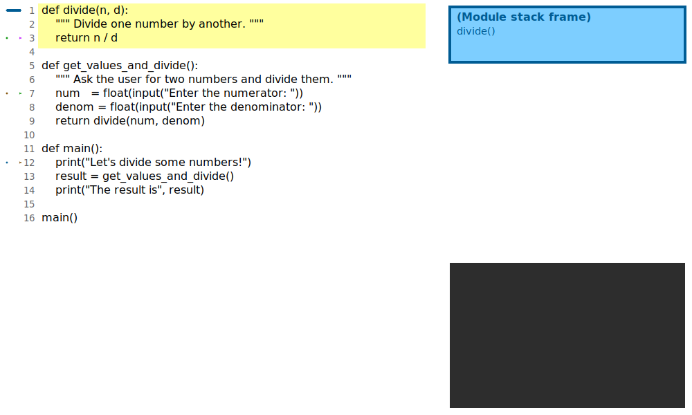
Stack traces
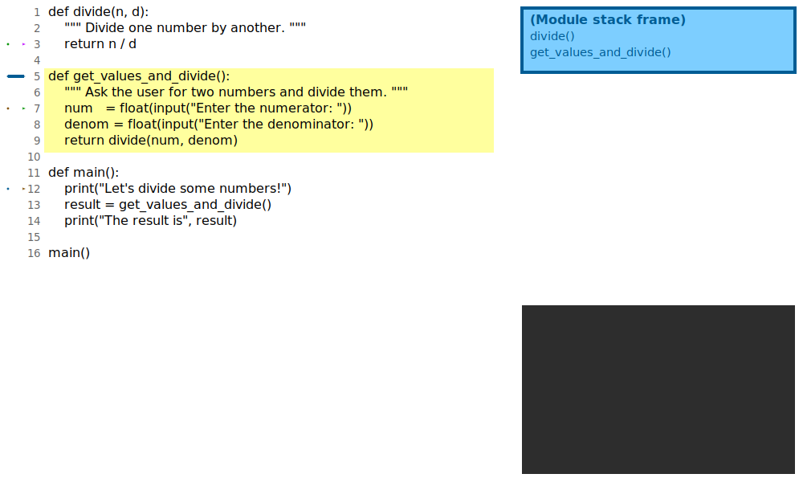
Stack traces
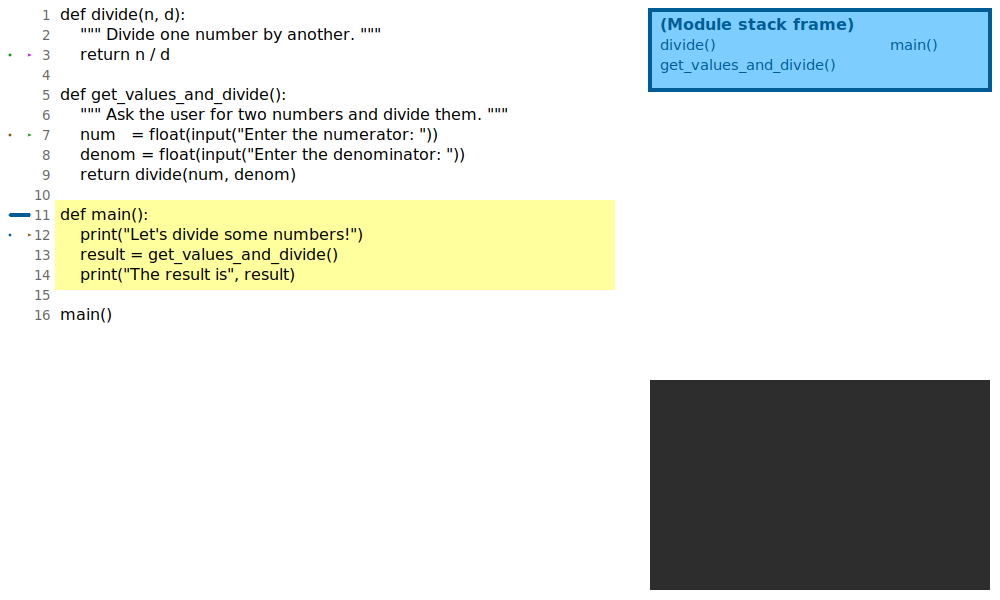
Stack traces
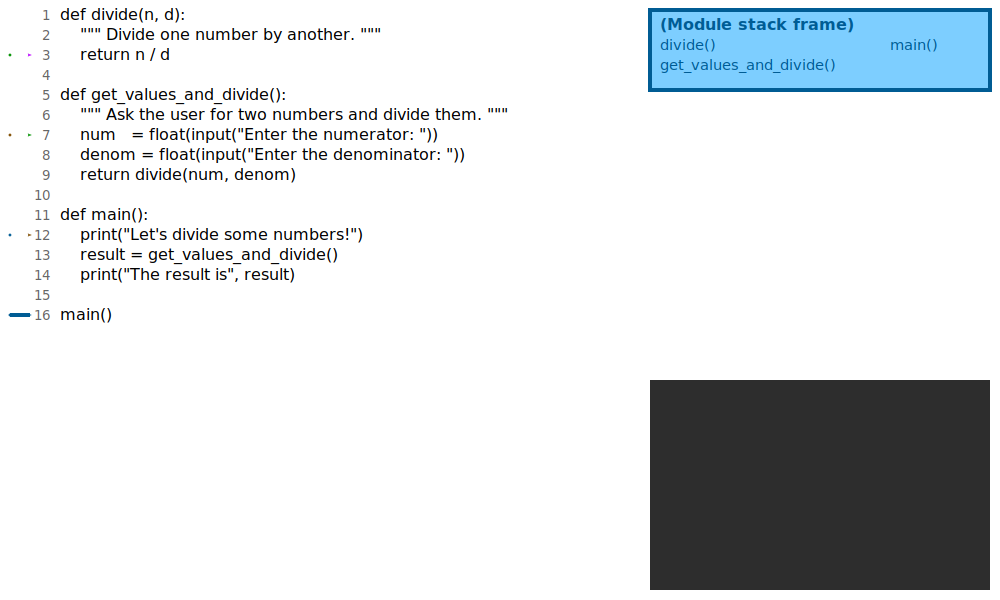
Stack traces
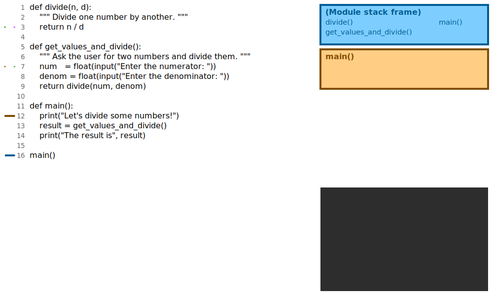
Stack traces
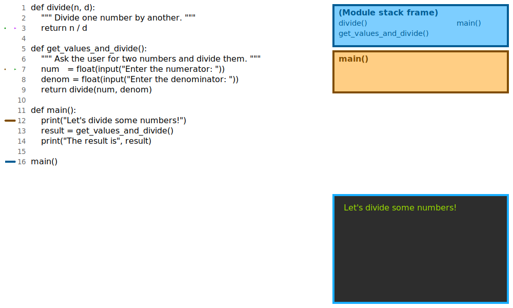
Stack traces

Stack traces
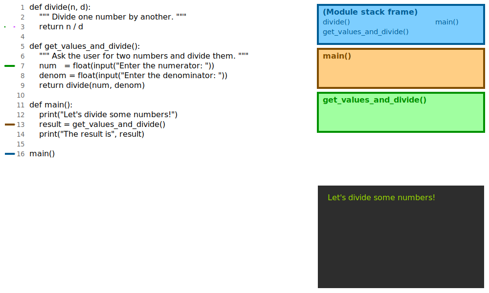
Stack traces
Stack traces
Stack traces
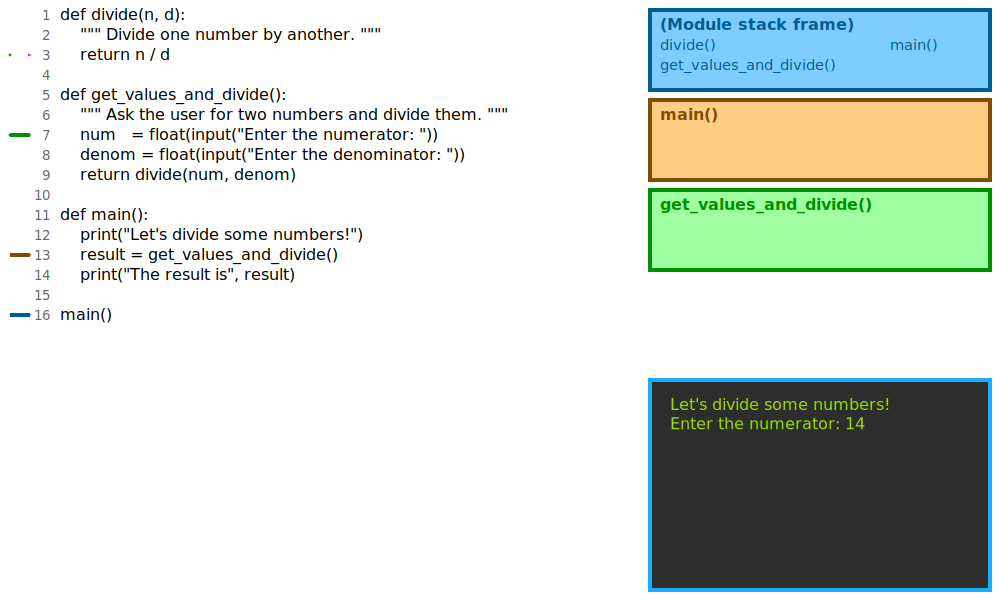
Stack traces
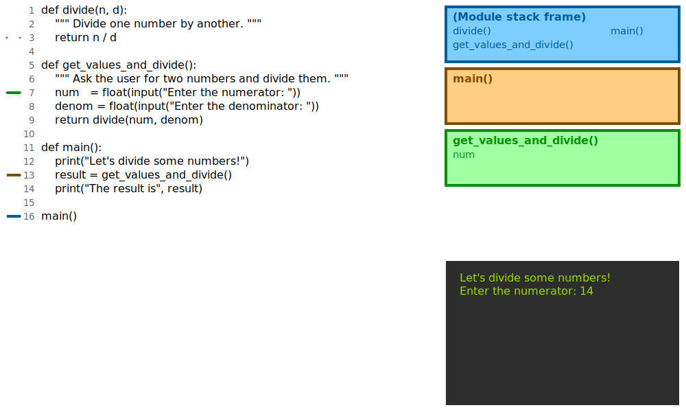
Stack traces
Stack traces
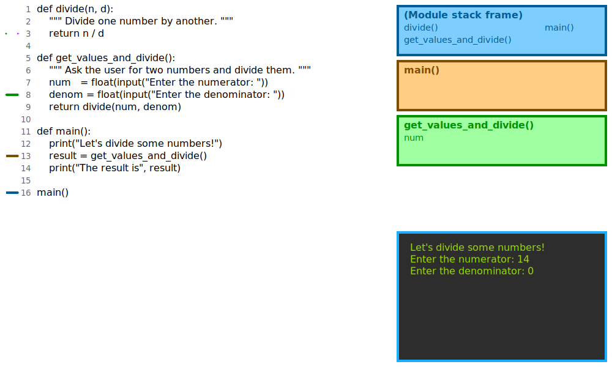
Stack traces
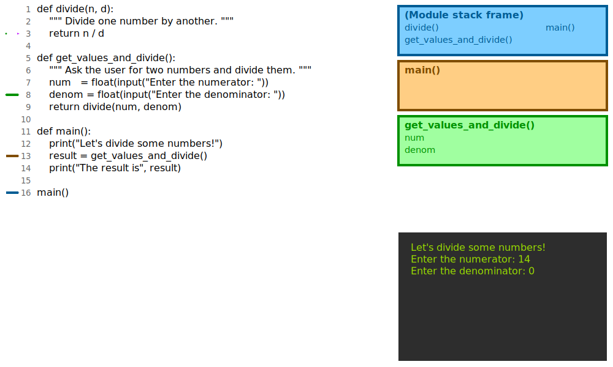
Stack traces
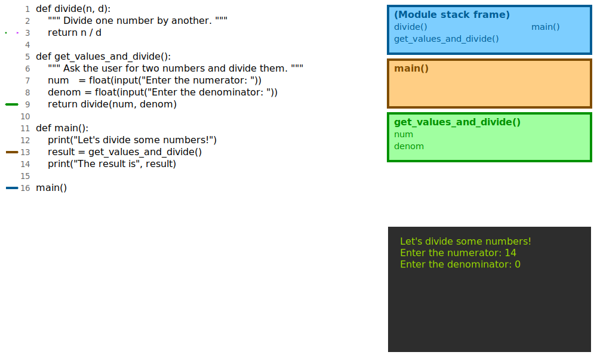
Stack traces

Stack traces
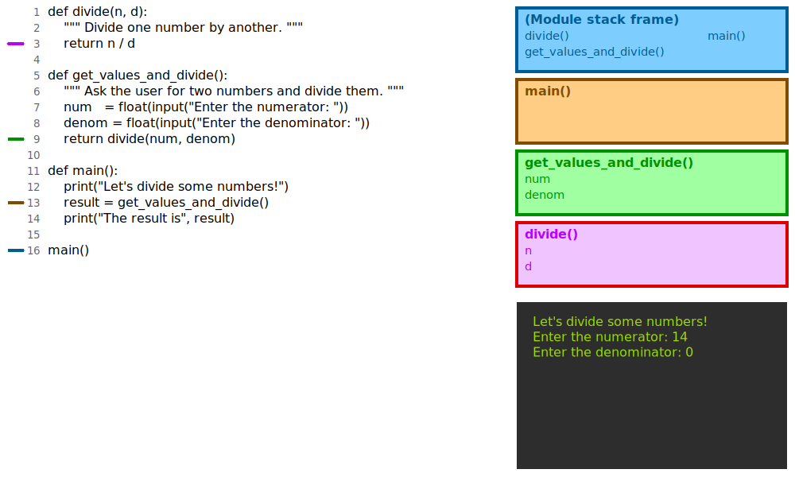
Stack traces
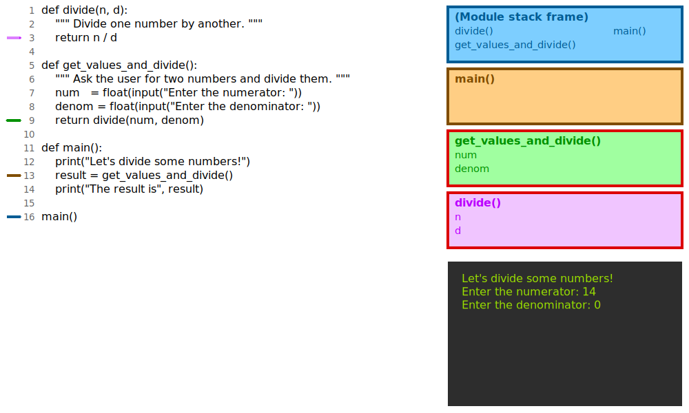
Stack traces
Stack traces
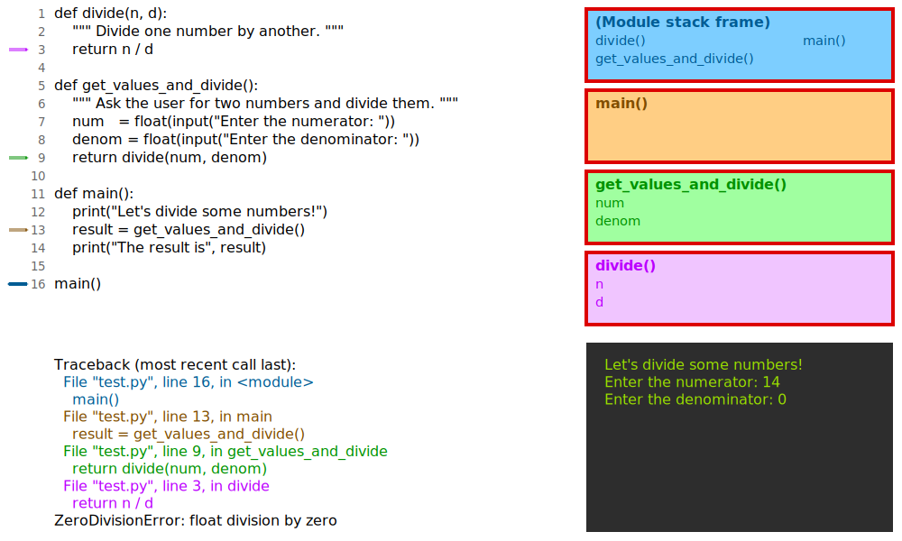
Raising exceptions
Your code can raise exceptions using a raise statement:
if response not in ['a', 'b', 'c']:
raise ValueError("Response should be 'a', 'b', or 'c'")A raise statement consists of the keyword raise and an exception. It’s a good idea to include an error message that explains why the exception got raised.
Handling exceptions
tryclause is mandatory, comes firsttry:
Zero or more
exceptclausesexcept:
Handles any exception; not recommended
exceptexception:
exceptexceptionasvarname:
Optional
elseclauseelse:
Applies when no exception is encountered
Optional
finallyclausefinally:
Applies whether or not an exception was encountered
A
trystatement needs afinallyclause or at least oneexceptclause
Exception handling example: input validation
def get_int():
""" Ask the user for an integer.
Repeat until the user enters a valid integer. """
while True:
response = input("Enter an integer: ")
try:
number = int(response)
except ValueError:
print("The value you entered is not an integer; please try again")
else:
return numberSummary
An exception is raised when something goes wrong in a Python program
Exceptions propagate up the call stack
A stack trace gives you useful information for debugging
The
raisestatement allows your code to raise its own exceptionsExceptions can be handled using
trystatements